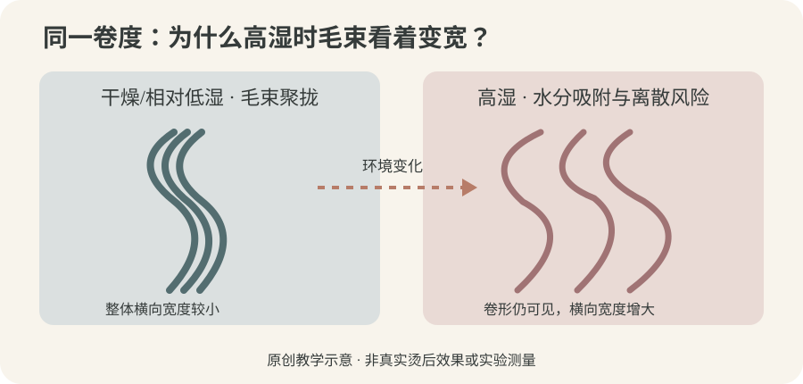
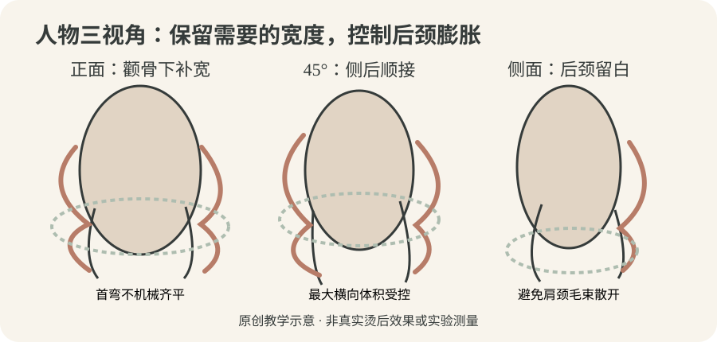
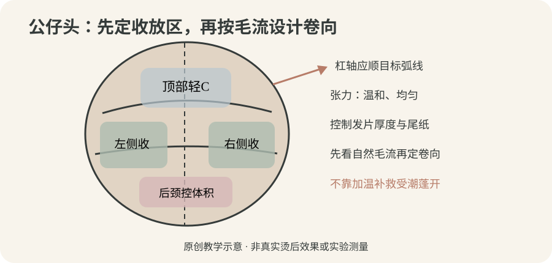

2026-10-27
【今日核心问题】同一头法式大S，晴天柔顺、潮湿天气却显头大，是卷度化学固定失效，还是毛束在吸水后改变了聚拢与体积？本课新增“卷度是否保留—毛束是否分散—外轮廓是否扩张”三层分辨能力。昨天研究有效发长和第一弯落点，今天在长度不变时研究环境湿度与视觉体积。
【毛发的两层结构】毛鳞片是表面的鳞片状屏障，影响摩擦与水分传递；皮质层中的角蛋白中间丝和基质蛋白是拉伸、弯曲、恢复的重要基础。二硫键是重要的共价交联；氢键易受水影响；盐键/离子作用和疏水作用共同参与力学表现。湿度增加，毛束外观改变，并不能直接证明二硫键重新断开。
【先分清三种变化】①单根发丝的弯曲幅度改变；②一小束发丝的整齐聚拢程度降低、短碎发偏离；③全头最大横向外扩点迁移，人物视觉比例改变。这三者相关，但不能仅凭拍摄时头发变宽判定烫卷松了。发丝间摩擦、静电、原生自然卷与修剪碎发也影响外观，研究并未保证所有人一受潮都会炸开。
【水与玻璃化】水分被毛发表面及内部结构吸附，改变部分氢键网络、角蛋白基质的塑化、结构松弛与黏弹性；不同毛鳞片/皮质结构的吸附、膨润与速度未必相同。材料研究提到玻璃化相关转变，但那不是门店热烫机的安全温度，也不是空气湿度越高、二硫键断得越多。
【还原—卷绕—热—干燥—氧化的分工】厂家许可的TGA等还原体系可改变部分可接近的二硫键；杠径、卷向、发片厚薄、轻稳张力提供目标曲线；水分改变物理状态；适当热及干燥参与塑形但不当热暴露有损伤风险；配套氧化参与部分共价交联重新形成。洗后持久的大弯和雨天保持发束聚拢不是同一个终点。氧化不能保证每根发丝在高湿时完全不膨胀；二剂也不是抗潮护理。
【化学历史差异】健康新生发、染后中段、旧漂发尾的表面状态、吸水与机械耐受可能不同。旧漂段若发黏、异常伸长不回弹或断丝，应停止进一步高风险化学热处理；保湿或涂抹护理不能证明其恢复了烫发耐受。CA若为门店产品简称，必须看实际成分和厂家兼容说明。相同pH不等于同药力；门店“pH7.5约60%软化”只能作为待验证内部观察等级，绝不是断键率。

【近七日检索边界】优先查询2026-10-20至10-27的人发吸湿、膨润、持卷与毛束体积研究。本轮未核验到直接给出门店“雨天法式卷必须用某个pH/温度/抗潮产品”的新高质量人体试验。使用可核验的原始材料研究与机制综述，不把营销话术当科学。
【来源一｜Breakspear等《The kinetics of moisture sorption by hair》，2024-11-11线上首次发表、2025年刊载，International Journal of Cosmetic Science，原始动态蒸气吸附实验】研究记录未经处理、热处理与漂色毛发及分离毛鳞片/皮质层的吸湿动力学；提示含水变化涉及不同结构区室、时间过程和样本密度。证据【中】：有DVS实测与模型，但不是沙龙完整法式烫、人物轮廓随湿度的临床试验。能支持“吸湿不仅看湿度值，还看时间、结构和样本历史”；不能证明“一定炸毛”或推出热烫机温度与抗潮效果。
【来源二｜Breakspear、Noecker、Popescu《New insights into hair compartments swelling via atomic force microscopy and dynamic vapour sorption》，2025-03-12首次发表，International Journal of Cosmetic Science，原始AFM与DVS研究】记录毛鳞片与皮质部分在相对湿度改变时的膨润和局部形变。证据【中】：有分区显微与吸附仪器观察，但研究属于受控离体纤维。能支持“不同区室吸湿膨润不能简化为一个均一数字”；不能证明任一产品能保护所有漂后发尾或给出统一日常抗毛躁处方。
【来源三｜Breakspear、Nöcker、Popescu《Chemical bonds and hair behaviour—A review》，2024-05-11首次发表，International Journal of Cosmetic Science，科学综述】总结二硫键、氢键、离子作用及疏水相互作用对毛发力学的不同贡献。证据【中至强，仅限机制】：整合多项实验，但不是本课顾客烫发效果的随机对照。能支持“水分变化可能改变临时形态与力学表现”；不能通过雨天膨胀推定二硫键断裂或药剂失效。
【证据分层】上述是科研；接下来公仔头杠径、提升角和三视角轮廓属于教学经验；真人药剂、热/时间、冲水、冷却与氧化只有在明确品牌型号及说明后才能制定，未查到这些说明不编造配方。
【模拟教学案例｜人物】虚构28岁女性，喜欢文艺、松弛而利落的衣着。长椭圆脸、颧骨中等偏窄、下颌较长；头顶偏高但局部细软，后枕较平，颈部细长，肩宽较窄。中长发至锁骨下约7厘米，低层次，原底线密实；顶区发径细软密度普通、两侧发量偏多发径中等、枕骨后侧发径偏粗、后颈发量密。右耳后天然向外生长，后颈有轻微自然波纹。新生发约8厘米健康，中段染冷棕两次，发尾约4厘米曾漂色后再染暗，末梢较干且需额外做耐受评估。每两天洗头，杭州潮湿天气多在室外活动，平时五分钟轻吹，偶尔自然干。
【顾客诉求及参考图】她展示专业造型照片，期望颧骨下微微补宽、下颌边第一道柔C、锁骨附近流动的大S，“自然、不卷得密、雨天不要变成大头”。参考照经过分束吹整、定型，未知当时湿度。目标不是让所有发区保持相同体积，而是保留脸周柔弯、控制耳后及后颈膨开。
【先诊断，不把膨胀当松卷】在相同角度拍干态自然垂落、轻吹后和室内停留后的照片，分别记录第一弯是否改变、发束是否分散、最大外扩在哪。问清洗后卷弯是否还在、只在潮湿时乱不乱。最大风险是为了“抗潮”直接追加药剂、加温或做强拉直，尤其危险于旧漂发尾；另一风险是对长脸一味压平全部横向体积，人物更显修长。
【剪裁层次】保留两侧一定底线密度，削薄应审慎；后颈在不形成透空断层前提下适度释放堆积重量。顶部不盲目增高。脸周第一柔弯位于颧骨下至下颌间，锁骨附近一条松S；发尾旧损伤影响安全有效长度时，改为较少曲线或自然吹整。发量多不等于应该满头高层次，需复核三个角度与潮湿时可能的体积扩张。
【药剂及软化】先按新生、染后、旧漂分区，再叠加顶部细软、耳后粗硬发径差别。仅选厂家允许的完整兼容还原—氧化体系，例如标签明确的TGA类热烫产品；“CA”按产品实物标签确认是否为保护剂、其成分与可混用性，不独立推导药力。产品型号未给出，因此不提供假精确pH、药水比例、处理分钟数或涂放顺序；实际按厂家建议的分段处理顺序与观察终点，结合毛发湿态回弹、异常拉伸、发黏、断丝和头皮反应判断是否停止。不要把经验pH比例当可测的断键率，也不能因潮湿炸毛提高还原强度。
【冲水、含水及卷绕】严格遵守厂家规定冲洗。记录毛束是滴水、均匀湿润或局部偏干，不把目测等级解释为含水率。发片厚薄相对一致、尾纸平顺，张力温和稳定；先确认旧漂发尾可否参与。公仔头几何练习可试顶部外径30—34毫米、两侧30—36毫米、后枕28—32毫米，这些只是观察首弯与体积的候选，不是上药处方。卷向结合右耳后毛流，后颈可以选择不卷。
【热、时间、干燥、氧化】具体设定、时间、冷却与氧化必须按相互兼容产品及设备说明。机器显示温度不是发芯温度；任何明显灼热、刺激、异常黏软或断丝立即停。二剂不能保证雨天不膨胀。完成后分别观察温和自然干、固定步骤轻吹、24小时日常状态；不在人头上做潮湿应力试验。
【成品与失败补救】理想正面顶部不过高，脸周仍有柔弯，两侧适当补宽但耳后不过分外扩；45度耳后与枕骨流向连续；侧面后颈不蓬成卷团。给顾客展示在实际环境下五分钟轻吹、少量适合其发质的定型产品与避免睡前湿发摩擦的技巧，不承诺任何产品“全天防潮”。若回家雨天变宽，先对照卷弯还在否、毛束分散位置和原处理史；不能未查原因就补药、再烫或强行拉直。
【正面】长椭圆脸、长颈窄肩需要适度横向平衡，不是全部做窄才叫头小。顶部已有高度，不必继续高耸；最大横向补宽可放在颧骨偏下至下颌附近，但耳后和肩颈处要有所收紧。第一弯与最大卷度不是一个点：第一柔C可先进入下颌附近，最明显S放在锁骨区域，但潮湿环境要特别留意后颈膨开后的总体重量。
【45度】从额角、太阳穴、脸周下颌转向耳后、枕骨，检查第一弯与毛流连接。右耳后向外的原生方向可能让潮湿状态更容易散开；应顺实际生长流向设计，左右不必绝对镜像。细软区如果过度打薄容易出现飞散碎发，不能把全部问题归咎于湿度。
【侧面】后枕偏平，可保留有限补圆；但后颈密而略自然卷，应避免过多圈数在肩颈形成一团。长颈人物无需机械照搬短颈人物的后颈留白尺度；目标是头部、颈线和肩宽之间有适当过渡。
【不同人物换算】圆脸、宽肩、短颈人物可能更需要侧后收紧与顶部有限高度；发量稀少者应保护底线，而不是无限增加层次。设计依据是人物风格与体积三视角，不以脸型套唯一答案。

【原理图｜figure1】比较较低湿度时相对聚拢的毛束与高湿条件下可能出现的纤维离散。看箭头指向的“视觉宽度变化”，不要将示意当真实对照实验，更不能由此证明二硫键变化。
【技术图｜figure2】公仔头顶部轻C、两侧收放和后颈体积控制区的几何标注。箭头只表示卷向与设计流向，不是药剂涂放次序；贴杠、厚薄、尾纸、自然毛流比盲目加温更适合先检查。
【美感图｜figure3】正面补宽的位置、45度侧后连续性、侧面后颈留白。看第一弯和最大横向体积是否过度重合；图中是抽象虚构人物，不是实拍效果证据。
三张图均为本课自行绘制的轻量SVG，暖米白与深炭灰为底，理论雾蓝、技术灰绿、美感灰粉、案例燕麦与提醒陶土，不包含第三方图像或真人资料。
【练习范围声明】仅供公仔头无药、无热的机械排杠；外径与角度是门店教学候选，不是科学定量或真人安全配方。提升角以当地头皮切线为0°，真实应顺毛流与发片几何观察。
【顶部】外径30—34毫米、提升25—45°，柔C支撑但不无限增高；发片贴杠平顺、张力均匀。压根首先查夹具压点/杠位，炸根首先查毛流与提拉矢量，而不是加强热。
【枕骨上部】外径28—32毫米、提升20—40°，补圆并与两侧首弯接续；杠轴循整体流向，相邻发片不应出现方向突变。控制卷入层数及张力，避免局部突然厚一截。
【左右两侧】外径30—36毫米、提升10—30°，长脸人物的脸周第一弯放在颧骨偏下至下颌附近，最强S可放在锁骨附近。右耳后毛流向外，先用湿发无药试排杠核对。尾纸平整，不把发尾折回；左右卷向可以不对称但轮廓需协调。
【后颈】可不卷或练习0—15°低提升轻C，保持长颈人物肩颈线条；厚片易堆时先分薄片与调整底线重量，不能推测一定是发芯受热不足。
【刘海/脸周】可不卷或大杠柔C；按额头与分缝、颧骨及下颌位置选第一弯，细软碎发避免强牵拉。
【圈数与张力】实际卷入圈数由安全有效发长、杠径与目标弯形决定，不是法式卷统一两圈。保持温和稳定、避免根部夹点；自然毛流相反区域要预演方向，才不会出现大面积流向冲突。
【七种纠错】压根→杠落点/夹具；炸根→根部提升与毛流；折痕→尾纸/局部过紧；尾翘→天然方向与末端铺展；断层→相邻杠轴/首弯高度；流向冲突→左右交界卷向；后颈堆积→发量/层次/圈数。若潮湿时毛束散开，另加一项“湿态比对”：确认单丝弯度是否仍在、短发碎散及毛束分离程度，先不要以补药补热作为默认纠错。

【先问五问】①“你说雨天炸毛，是大弯完全变直，还是弯还在但发束分开变蓬？”②“不要太卷，是不要小密卷，还是希望最大卷度也很轻？”③“显脸小，是想收耳后、缩下摆，还是脸周适当增加横向轮廓？”④“参考图是吹整后拍的，平时自然干愿意接受多少差异、每天能整理几分钟？”⑤“新生、染后与漂过的发段分别在哪里？若旧漂尾不耐受，可以调整设计吗？”
【模拟顾客对话】顾客：“上次晴天很漂亮，下雨天一出门整个头变大，是不是二剂没做好？” 发型师：“不能只看变宽就认定二剂有问题。我先看你的大S还在不在，再看发束是不是散成很多小束。空气湿度会影响毛发吸水和外观，和永久卷化学固定不是同一件事。” 顾客：“那还能自然又显脸小吗？” 发型师：“你的脸偏长，不需要把左右都压得很贴。我们保留颧骨下方适度宽度，收住耳后与后颈，设计洗后轻吹就能整理的弯度。照片有吹整，不保证雨天和室内完全一样。” 顾客：“加强药水是不是更稳？” 发型师：“加强药水不能保证抗潮，旧漂发尾反而可能增加受损风险。先确认发质安全，再按厂家流程操作。”
【复制话术】“我先把‘卷度变松’和‘毛束遇潮散开’分开判断。你的设计需要脸周柔和、耳后不鼓、下摆不堆，所以我们按安全发长做大弯，完成后教你五分钟轻吹和适合发质的整理方式。潮湿时毛发会改变吸水和聚拢状态，我不会为所谓防潮盲目加药、加温或承诺照片一模一样。”
【先做题】模拟同源公仔头两侧均有相近的大S形态。干燥环境照片上左右看起来相近；高湿环境下，右侧发片出现许多独立细束、外宽变大，但可观察的单束S弯仍然存在。该案例仅为判断练习，并非真人真实服务或实验结果。问一：能否判定右边二硫键被破坏、二剂不足？问二：先比较哪三个观察指标？问三：能否因右侧粗硬就提高pH？问四：人物脸偏长时是否要无条件收窄全部侧发？问五：要让公仔头练习变成可复核记录，哪些条件必须固定？
【参考答案一】不能。高湿导致外轮廓膨开可能来自吸水后的纤维力学及束间聚拢变化，也可能有自然毛流、层次碎发、打理差异；没有化学分析不能推断二硫键断裂或二剂不足。
【参考答案二】分开记录第一弯/最大S是否移位、单束弯曲是否变松、毛束分散和全头最大横向外扩位置。拍摄要固定发型状态、机位和头姿，不用一次效果照作为证据。
【参考答案三】不能。同一pH也不等于同一还原能力；发径/化学史/耐受和厂家说明优先，旧漂段异常恢复差尤其不能追加还原。
【参考答案四】不能。偏长脸可能需要颧骨偏下适当横向补宽，耳后与后颈才是重点控制区；应联合肩颈与密度，而非套“越贴越小”。
【参考答案五】保持同来源发束、有效长度、初始弯度、清洁与定型产品、放置时长、环境温湿、机位光线一致，做多束重复且记录没有变化的样本。
【思考路径】处理史及安全→卷度曲线与毛束聚拢分开→湿度吸附机制的证据边界→正面45度侧面比例→公仔头几何计划→厂家完整工艺→自然干和轻吹交付→低风险离体验证。
【今日一件事：无药无热的离体毛束湿度单变量比较】目的：观察在同来源、相近自然弯度毛束中，仅改变环境相对湿度时，发束横向宽度与小束离散是否出现可重复变化；不能用来判断二硫键断裂率或某个药水的持久度。
【材料】同来源已自然弯曲的离体毛束8束，每组4束；两个具备可记录湿度的小型透明密闭盒、温湿度计、清水与小容器（仅用于调节箱内湿度，不直接浸泡毛束）、刻度背景板、固定挂钩、手机及计时器。不用加热、二剂、还原剂、喷雾或真人毛发实验。
【唯一主动变量】目标相对湿度：A组约40%—50%RH、B组约70%—80%RH，仅作为实验环境候选范围，不是门店工艺参数。用温湿度计记录实测值，温度尽量相同。控制毛束长度、起始清洁与自然干程度、初始曲线、质量、固定方式、接触水情况、光照及测量时间；毛束在盒内不触液，防止冷凝滴落。如湿度不可稳定控制，应标实验不可比，不声称结论。
【步骤】①同条件自然干后随机编号A01—A04/B01—B04并记录初始最大横向宽度、第一弯及散束数量等级；②各组入箱保持温度相近；③30分钟、2小时与24小时从盒外定点拍摄，记录实际温湿度、宽度和弯度等级；④统一恢复到同一室内环境24小时，拍摄恢复情况；⑤换组做第二轮交叉重复，尽量减少毛束差异；⑥保留全部无差异和异常记录。
【空白记录表】编号｜组别与实测RH｜初始宽度mm｜30分钟宽度｜2小时宽度｜24小时宽度｜第一弯位置｜散束等级0—3｜恢复24小时宽度｜备注；A01、A02、A03、A04、B01、B02、B03、B04共8行全部“待测”。等级0表示基本聚拢，3表示明显分散，仅为观察级别不是科学设备量测。
【如何形成门店标准】若重复观察支持，可在公仔头练习和真人咨询记录中增加“天气湿度、自然干与轻吹、最大外扩点、卷形保留/散束分开”的观察项目；若结果不稳定也如实留档。本实验未实施、无任何虚构结果，不以湿度盒实验推导人体持久卷、热烫安全参数或具体产品效果。
【一个原理】湿度能够改变毛发吸水、局部力学与发束聚拢，整头显宽不等于二硫键固定失败；先分开观察单束曲线和全头轮廓。
【一个错误】遇潮毛躁就认定二剂不足或药力不够，未经评估对旧漂发尾追加还原和热。
【下次观察】在相同拍摄角度下记录自然干大S是否仍在、毛束分散程度、最大横向外扩点和环境湿度，优先核对人物比例与发质安全。